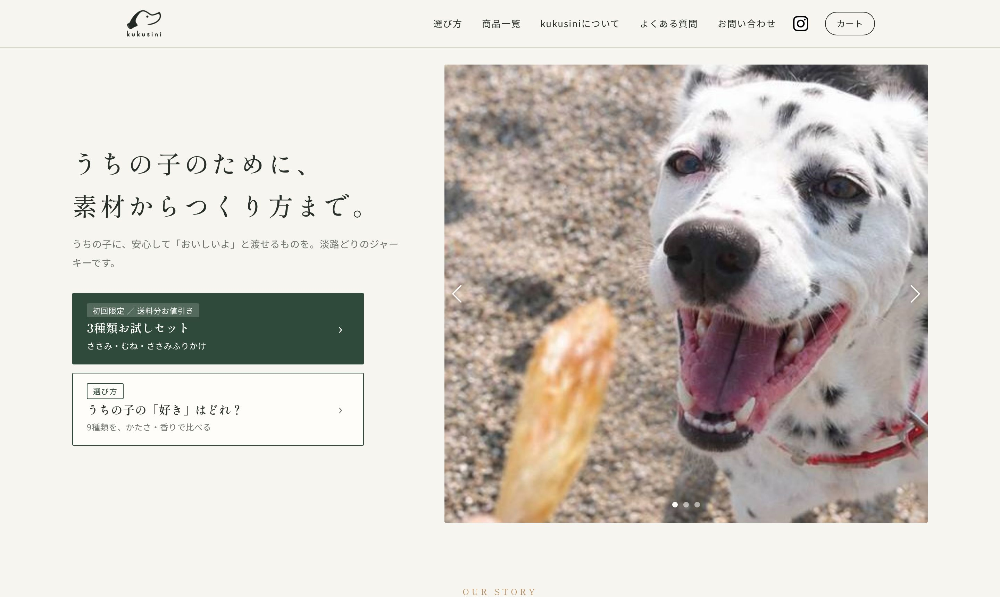

kukusini ECサイトリニューアル
トップページ
ファーストビュー案
いまの公開サイト・前回の見本と、PC・スマホで10の見せ方を比べます
2026.11.26 谷

今
いまの公開サイト（BASE）
shop.kukusini.com のトップ（2026.11.26 時点）。比べるための出発点です。
良いところ
- 商品のパッケージが並んだ写真で、何のお店かは分かる
- スマホのキャッチ「自然豊かな淡路島で育った“淡路どり”を使った無添加おやつとごはん。」は、素材と無添加がはっきり伝わる
気になるところ
- PC は写真だけで、キャッチも次に押すボタンも1画面に入っていない
- スマホは写真が小さく、キャッチまでで1画面が終わる。お試しセットや選び方への入口が見えない
- 犬が写っていないので、「うちの子が食べる」場面が浮かびにくい
新しいページでは
写真（犬とおやつ）・キャッチ・バナー2つを、PC もスマホも1画面に収めます。いまのキャッチの「淡路どり」「無添加」は、新しいキャッチや説明文に生かせます。
前
前回の見本
11/25 の打ち合わせ後に作った見本。キャッチが上、その下に写真（3枚のスライド）、写真の下にバナー2つ。
良いところ
- キャッチが最初に目に入り、ゆったり読める
- 写真が文字に邪魔されず、そのまま見える
気になるところ
- PC はキャッチの余白と写真で1画面が埋まり、バナー2つが下に隠れる
- スマホも2つ目のバナーが1画面に収まらない
- キャッチと写真が別々に見え、1枚の絵としての印象が弱い
ここから
キャッチを写真に重ねるか、写真の横に置くことで高さを詰め、バナーまで1画面に収めます。次のページからの10案は、その置き方の違いです。
A
写真とキャッチを横に並べる
中央の幅（1200px）に収め、写真の隣の余白にキャッチを置く。左右は入れ替え可能。
良いところ
- 文字が写真に重ならないので、キャッチがいちばん読みやすい
- 写真を小さめに見せるため、スマホで撮った写真でも粗が出にくい
気をつけること
- 写真の迫力は控えめ。きちんとした印象になる分、印象には残りにくい
- スマホでは写真の下にキャッチが来るので、写真とキャッチが別々に見える
B
バナーをファーストビューに組み込む
キャッチの下に「3種類お試しセット」「選び方」をボタンとして並べ、写真と一緒に1つの絵にする。写真の下の独立したバナーはなくす。
良いところ
- 写真・キャッチ・次に押すボタンが1か所にまとまり、ファーストビューの考え方にいちばん素直
- バナーの帯がなくなる分、写真をいちばん大きく（縦に長く）見せられる
- スマホでもボタン2つまで1画面に収まる
気をつけること
- バナーにあった小さな商品写真はなくなる（ボタンの文字だけになる）
- PCは横長より縦長寄りの写真のほうが収まりがよい
向いている写真
縦長〜正方形に近い、犬の表情が中心にある写真
C
余白を生かしたフレーム型
写真を全面に広げず、細い罫線の枠の中に写真とキャッチを収める。小さな英字（Natural dog treats）と短い線で文字を整える。
良いところ
- ナチュラルで上質な雰囲気がいちばん出る
- 写真が小さめなので、スマホで撮った写真でも粗が出にくい
- いまの色・明朝体の世界観とよく合う
気をつけること
- 迫力は控えめ。目を引く力より、落ち着きを取る案
- 英字（Natural dog treats）は飾りとして足している。不要なら外せる
向いている写真
どんな写真でもよい（明るく、背景がすっきりした写真がより合う）
D
大小の写真を組み合わせる
犬の写真を大きく置き、その左下に商品の写真を小さく重ねる。キャッチは左の余白に。雑誌のようなメリハリのある構成。
良いところ
- 「犬が喜ぶ」と「この商品」が1画面で同時に伝わる
- 大小の差で目線が自然に動き、単調にならない
- 商品写真はいまあるパッケージ写真で足りる
気をつけること
- 小さい写真が重なる分、PCは写真の下に少し余白が要る
- 大小の写真の色味が離れすぎるとちぐはぐに見える
向いている写真
大：犬の表情が分かる写真／小：パッケージと中身が分かる商品写真
E
写真をずらしてカードを重ねる
写真を右（スマホは下）に寄せ、空いた余白から写真にかかるようにキャッチのカードを重ねる。
良いところ
- 雑誌のように上品にまとまる
- カードが写真の端にかかるだけなので、写真をほとんど隠さない
向いている写真
どんな写真でもよい（主役が中央〜右寄りだとより良い）
F
写真に白いカードを重ねる
写真を画面いっぱいに広げ、キャッチは写真の右側に重ねた白いカードの中（前回の見本のあとに試した形）。
気をつけること
- カードが写真の一部を隠すので、写真によっては犬の顔やおやつにかかる
- スマホは「キャッチ → 写真 → バナー」の縦並びのため、2つ目のバナーが1画面に収まらない
G
写真に直接のせる
写真をいっぱいに見せ、左側（スマホは下側）をうっすら暗くして、白い文字のキャッチを直接のせる。
良いところ
- 写真が主役で、キャッチも大きく読める。参考サイト（協栄さん・西田歯科技工所さん）に近い
- スマホでも写真とキャッチが1枚の絵として見え、バナー2つまで1画面に収まる
気をつけること
- 文字をのせる側（PCは左下、スマホは下）がごちゃっとしていない写真を選ぶ必要がある
向いている写真
左側や下側に地面・芝生・空などの余白がある写真
H
縦書きのキャッチ
明朝体の縦書きで、キャッチを右端に置く。説明文は写真の下へ。
良いところ
- 「うちの子のために」の手づくり感・和の雰囲気といちばん合う
- ほかのペット用品のサイトと見た目で差がつく
気をつけること
- 縦書きにできるのは短い文だけ。説明文は外に出す
- 右側に暗めで落ち着いた背景がある写真でないと、文字が読みにくい
向いている写真
右側に余白があり、全体のトーンが落ち着いた写真
I
斜めの透過面
ブランドの深緑を斜めに透かして重ね、その上にキャッチ。参考サイト（ディーテックさん）の形。
良いところ
- 深緑がブランドの色として強く印象に残る
- 文字が確実に読める
気をつけること
- 緑の面が写真の3〜4割を隠すので、犬の顔の位置に気をつけて写真を選ぶ
- 色面が強いぶん、やさしい・手づくりの雰囲気からは少し離れる
向いている写真
主役（犬・おやつ）が右側に寄っている写真
J
3枚を並べて見せる
スライドさせずに3枚を同時に並べ、中央にキャッチ。スマホは大1枚＋小2枚。
良いところ
- いろいろな子が食べている様子が一目で伝わり、「うちの子」感がいちばん出る
- スライドを待たなくても全部の写真が見える
気をつけること
- 3枚とも写真の質と色味がそろっていないとちぐはぐに見える
- 1枚ずつは小さくなる
向いている写真
同じ日・同じ光で撮った、トーンのそろった3枚
谷のおすすめ
B本命：バナーをファーストビューに組み込む
「写真・キャッチ・次に押すボタン」というファーストビューの基本が、1つの絵にまとまります。バナーの帯がなくなる分、犬の写真をいちばん大きく見せられ、PC もスマホも同じ考え方で作れます。お試しセットへの入口がキャッチのすぐ下にあるので、初めての方を迷わせません。
G写真の迫力を取るなら：写真に直接のせる
犬の表情が画面いっぱいに広がり、いちばん印象に残ります。写真を差し替えても崩れにくい案です。
C上質さを取るなら：余白のフレーム型
細い枠と余白で、ナチュラルで落ち着いた世界観がいちばん出ます。写真の質に左右されにくい案です。
B の左右（写真とキャッチの位置）は好みで入れ替えられます。どの案も、ファーストビューより下（こだわり・選び方・商品一覧など）は変わりません。決まった案を PC・スマホの両方でテンプレートに入れ、見本ページで確認していただきます。